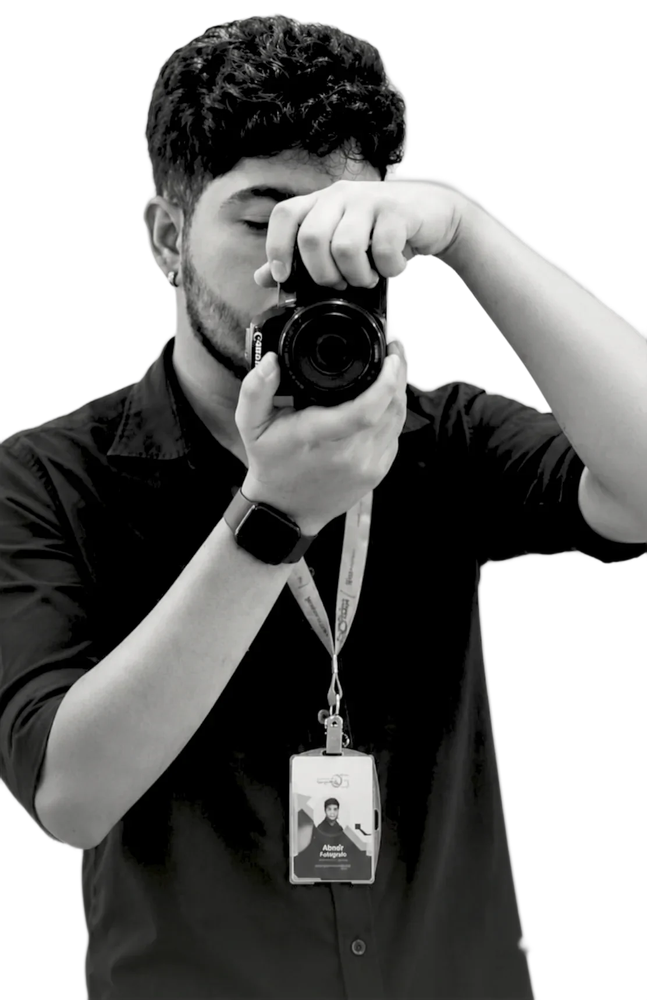
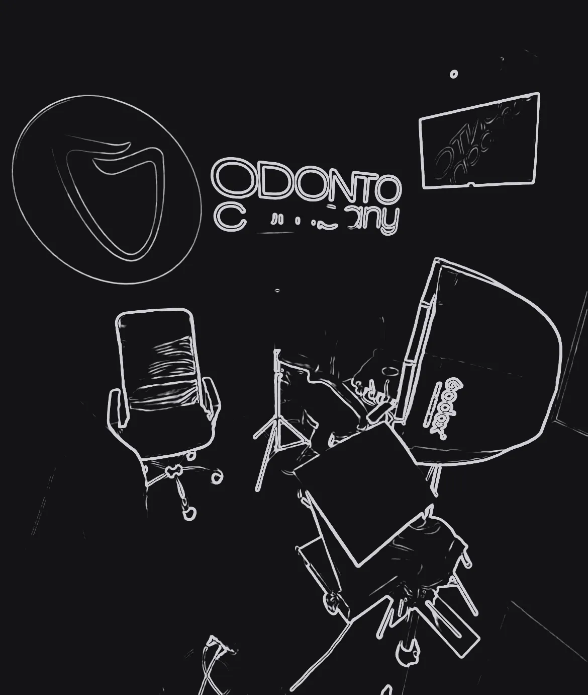

VideomakerCaptação · Edição · Bastidores
Gravando em Catalão-GO

Olá, eu sou
Greick Fideles, videomaker
Videomaker
Captação & edição
Transformo estratégia em imagem, movimento e narrativa. Videomaker parceiro da EC Marketing — do set montado à timeline finalizada.
Catalão-GO · PJ na EC Marketing Digital
Cada corte conta.
Do set à timeline.
- 2026.Entrada na produção audiovisual de agência
- 3–4Vídeos por dia na rotina de edição
- 360°Do preparo do set à entrega final
01 / Bastidores selecionados
Antes do primeiro corte.
Nada encontrado. Tente “luz”, “gimbal” ou “edição”.
Feito com
o kit de sempre.
- Sony ZV-E10
- Canon SL2
- Gimbal Scorp
- Godox
- Teleprompter
Por trás da cena
Do rascunho.
Ao set.
Um quadro, todas as decisões. Arraste para ver o rascunho da luz virar o set montado para a gravação.

Marca no fundo Cadeira · cliente Luz principal luz suave no rosto Rascunho No set02 / Por trás da câmera
Meu audiovisual
acontece onde a
estratégia vira cena.
Sou Greick Fideles, videomaker em Catalão-GO. Atuo como profissional PJ na EC Marketing Digital, participando de uma rotina real de produção para marcas, profissionais e eventos.
Atuação & especialidade
Atuação
Videomaker PJ · EC MarketingMai 2026 – hoje
Marcas, profissionais e eventos, com prazos reais e captações externas.
Fotografia & imagemPonto de partida
Enquadramento · Lente · Movimento · Repertório
Serviços & ferramentas
- Captação
- Edição
- Construção de luz
- Operação de gimbal
- Teleprompter
- Vídeos curtos
- Legendas
- Sony ZV-E10
- Canon SL2
- Gimbal Scorp
- Godox
- Teleprompter
Do set à entrega
- 01Entender
Objetivo, público, mensagem e ritmo que o vídeo precisa ter.
- 02Preparar
Montagem do set e construção de luz antes do REC.
- 03Captar
Enquadramento, áudio e movimentos de câmera e gimbal.
- 04Organizar
Seleção e organização do material bruto.
- 05Construir
Cortar, sonorizar, legendar e dar acabamento à narrativa.
Intenção primeiro. Técnica a serviço da história.
Meu processo
em cada vídeo.
03 / Trajetória
Uma carreira construída na prática.
Experiência & marcos
-
Hoje, penso a imagem do set à timeline: luz, enquadramento, estabilização, ritmo, legendas e acabamento trabalhando juntos.
-
A rotina de agência transformou estudo em prática: diferentes segmentos, prazos reais, captações externas e uma produção constante de vídeos curtos.
-
A fotografia e o interesse por imagem abriram o caminho. Cada teste de enquadramento, lente e movimento virou repertório.
04 / Acompanhe o próximo frame
Minha evolução
continua em
movimento.
No Instagram, compartilho bastidores, captações, equipamentos e o que aprendo vivendo o audiovisual todos os dias.
Acompanhar no InstagramGreick FidelesReplay
Montado
ao vivo.
Esta página · montada frame a frame
Sobre este portfólio
Este site se monta na sua frente, camada por camada, como um vídeo ganhando forma na timeline. Aperte o play no cartão “Montado ao vivo” para assistir de novo — ou use o botão “Pular” na barra de montagem.